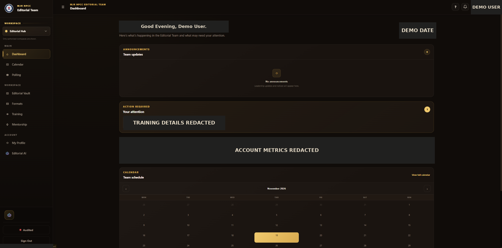
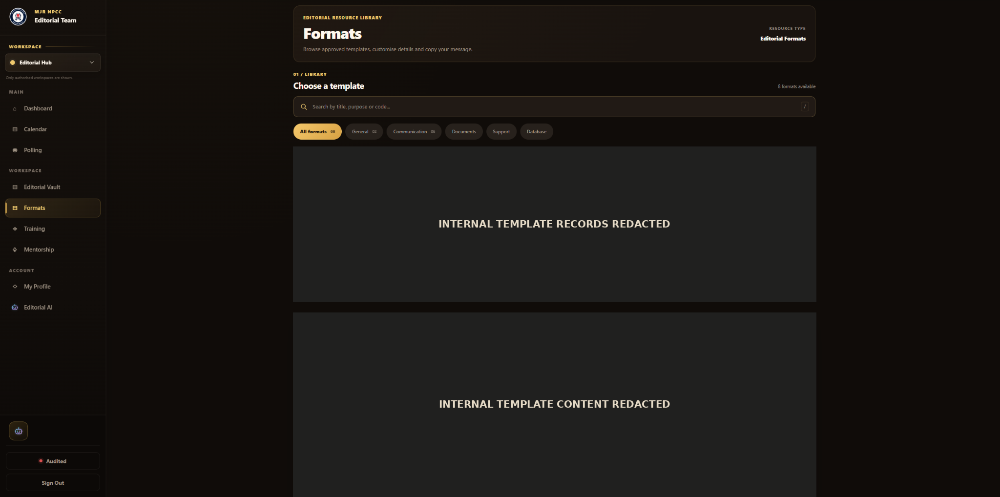
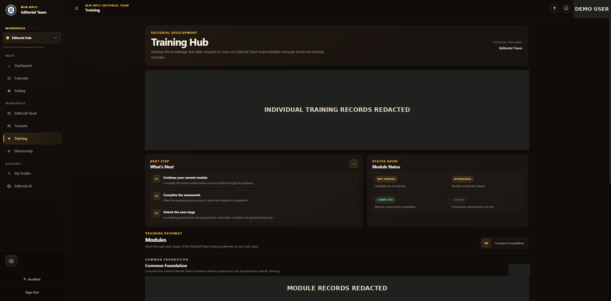

The challenge
When resources, schedules, training and reporting exist in separate places, members have to find the right information before they can begin their work. Consistent formats and clear responsibilities are also harder to maintain.
MJR NPCC Editorial Team / Digital transformation
An integrated platform designed around the way an editorial team works, learns and manages its responsibilities.
Explore the platform Read the project story ↓
Project scope, not usage statistics.
The operational Editorial Hub is a private workspace. This independent public edition presents selected, redacted interface images so viewers can understand the project without accessing member records or live administrative functions.
The development rationale
Editorial work involves documentation, communication, coordination and the development of members. The Hub brings these distinct responsibilities into a common environment, making the workflow easier to navigate and giving each function a dedicated place.
When resources, schedules, training and reporting exist in separate places, members have to find the right information before they can begin their work. Consistent formats and clear responsibilities are also harder to maintain.
Organise routine activities in a shared home workspace, then separate specialist responsibilities into purpose-built centres. Give common tasks predictable interfaces and support member development alongside everyday operations.
General-purpose tools are useful for individual tasks. A dedicated workspace can bring those tasks together around the specific needs of an editorial team.
A dedicated web platform is not a replacement for every existing tool. Its purpose is to connect recurring responsibilities through one coherent interface, so members can focus on their work rather than navigating disconnected processes.
Give members a predictable starting point for resources, schedules and editorial tasks.
Support consistent communication, documentation and reporting through shared formats.
Make knowledge and training resources easier to carry forward between cohorts.
Give routine and specialist responsibilities a defined place in the workflow.
The design links common editorial responsibilities without assuming that every external tool must be replaced.
Individual tools
Editorial Hub
| Conventional approach | Platform response |
|---|---|
| Separate document repositories | Searchable Editorial Vault |
| Drafting messages individually | Standardised formats and live preview |
| Separate scheduling and polling tools | Integrated calendar and decision workspace |
| Manual training and mentorship tracking | Structured learning and mentorship interfaces |
| Preparing reports from scratch | Report composers with document previews |
| Distributed administrative processes | Dedicated specialist workspaces |
Conceptual comparison of workflow approaches, not a verified record of past team practices or measured outcomes.
A common editorial environment with specialist workspaces for leadership, development, data and administration.
Daily operations, resources and member development.
Departmental oversight, reviews and structured progress reporting.
Quality, standards and editorial capability development.
Organisational records, data management and reporting.
Account governance and operational administration.
Conceptual workspace map; not an access, permission or network diagram.
Three examples of how the platform brings related steps together.

Communication
A library of standardised formats with a composition workspace and live preview supports consistent drafting without requiring members to start each message from scratch.
View the interface collection ↘
Member development
Training modules, prerequisites and progress indicators support a sequenced approach to learning. Mentorship complements the training system with guided development.

Reporting
Dedicated report composers bring defined fields and a document preview into the same workflow, supporting more consistent internal reporting.
Explore the platform by function. Select a category to discover its redacted interfaces, or open a preview to inspect it at full size.
The operational platform combines modern web technologies, structured data management, access governance and integrated digital tools. The public showcase remains intentionally separate.
These principles describe the intended design direction, rather than a certification or independent assessment of the operational system.
As members graduate and leadership changes, the platform is intended to help preserve knowledge and provide a consistent foundation for future editorial teams.
Retain shared knowledge and documentation.
Guide incoming members through structured learning.
Support leadership transitions and ongoing improvement.
The goal is an editorial environment that remains useful beyond any individual appointment. Long-term continuity also depends on ongoing maintenance, appropriate access management and documented handover practices.
The project brings several areas of editorial work together. Its development can be understood through the capabilities introduced and refined, rather than unverified dates or release statistics.
Bring navigation, resources and routine coordination into a single editorial environment.
Introduce structured training, templates and mentorship to support editorial development.
Build dedicated leadership, data and administrative environments alongside the main Hub.
Integrate reporting interfaces and Editorial AI to support writing, learning and operational work.
These are thematic development stages, not a dated release record.
Future priorities are proposed areas of improvement, subject to team needs and available resources.
Review navigation, readability and keyboard support.
Refine training and mentorship workflows through feedback.
Assess usability and collect appropriate, non-sensitive evidence of outcomes.
Review documentation, maintenance and governance practices.
MJR NPCC Editorial Team
From everyday coordination to structured learning and specialist administration, the Hub represents a sustained effort to design a more coherent editorial environment.
Revisit the showcase ↗